Briefing
Living systems
Living typografie systems
Living communications systems
Hoe kunnen letters zichzelf evalueren?
Hoe kunnen letters evalueren naar een ander communicatie systeem?
Wat is mijn motivatie
Ik werk graag volgens dynamische systemen die verassende uitkomsten kunnen genereren. Deze systemen dienen als speelveld voor een ontwerp. Het zijn regels waarin nog heel veel vrijheid schuilt. Waar net als bij letter ontwerp wordt gewerkt met het systeem van ons alfabet, zelf opgelegde systemen en contrast systemen die we al heel lang kennen.
Wat is het onderwerp
Onze omgeving zit boordevol dynamische systemen. Deze systemen voelen ongecontroleerd maar zijn nauwkeurig ontworpen algoritmes. Elke boom in onze omgeving ziet er anders uit, maar is waarschijnlijk gegenereerd door het zelfde systeem en overeenkomsten in het DNA.
Opdracht omschrijving
Ontwerp regels, systemen of algoritmes voor letters, waarbij de regels die je daarvoor bedenkt het ontwerp van de letter bepalen. Het DNA van de letter is bepalend voor de vorm van de letter. Probeer een manier te bedenken waarbij de vorm en het ontwerp van de letter zoveel mogelijk door het systeem wordt bepaald. Geen bestaande vormen waar iets op groeit of iets mee gebeurd. Denk na hoe deze letter kan evalueren en hoe dit in verhouding staat tot het begrip tijd. Welke invloeden spelen daarbij een rol?
Kijk hoe de letter kan evalueren naar een communicatie mindel die in 2075 zou kunnen plaatsvinden.
Wat is het maatschappelijk belang?
Wat wil ik vertellen
De natuur zit boordenvol inteligente systemen de belangrijk kunnen zijn. Deze systemen proberen we tegenwoordig aan te passen, te modifiseren en te verbeteren. Kan ik het beeld dat we verwachten van een letter modifiseren? Kan een letter evalueren? En hiermee de schoonheid van deze systemen kenbaar maken?
De lettervormen van ons alfabet zijn duizenden jaren gelden ontstaan. Deze vormen zelf zijn een systeem opzichzelf die als duidelijk comminicatie middel beschouwen.
Het gebruik van fictie en fantasie. Vragen die je moet stellen aan jezelf
- Kunnen er hele nieuwe lettervormen ontstaan, die niet gebasseert zijn op het Latin ABC verhaal?
- Microben als materiaal voor de toekomst om onderling te communiseren
- Als letters kunnen leven zouden ze dan ook kunnen praten?
- Comunicatie ferquentie tussen letters
- Letters die reageren op hun omgeving. Warmte, beweging, andere soortgenoten
- Hoe kunnen microben in de toekomst helpen bij communicatie?
- Letters die evauleren naar een nieuwe manier van communicatie waarbij microben kunnen helpen
- Hoe ga ik om met de bestaande lettervormen van het
Uitwerking mogelijkheden
- algoritmes
- systemen
- processing
- analoge systemen
- biologisch materiaal (schimmels en bacteren)
Uitwerk mogelijkheden fysiek
- pen met bacterie vloeistof
- pen met vloeibaren schimmels, waarbij de inhoud blijft groeien
- 3d printen met agar
Inspiratie
Systems
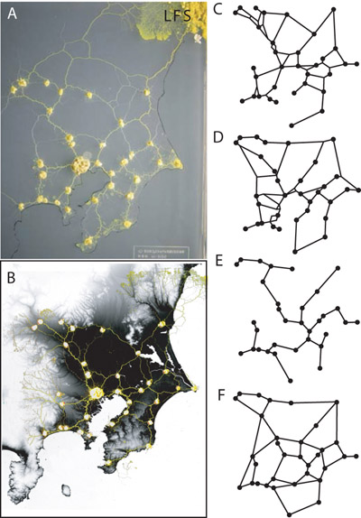 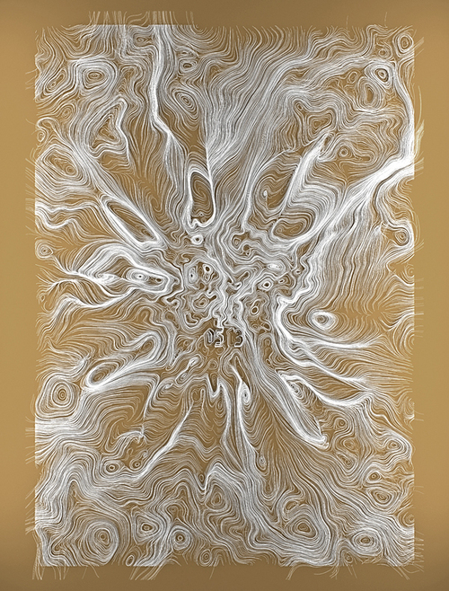 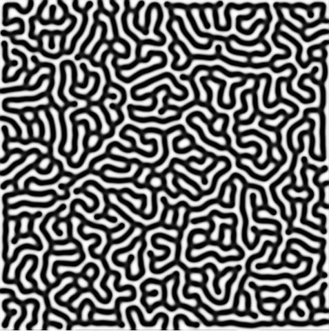 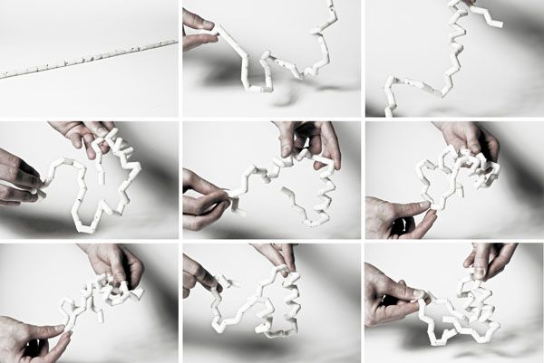 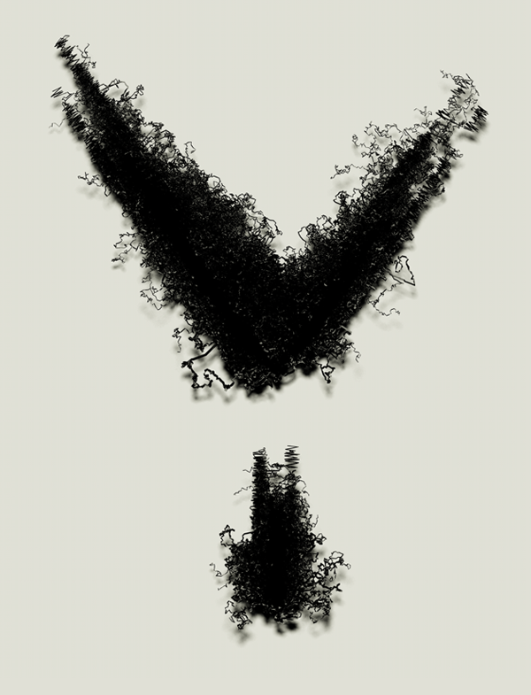 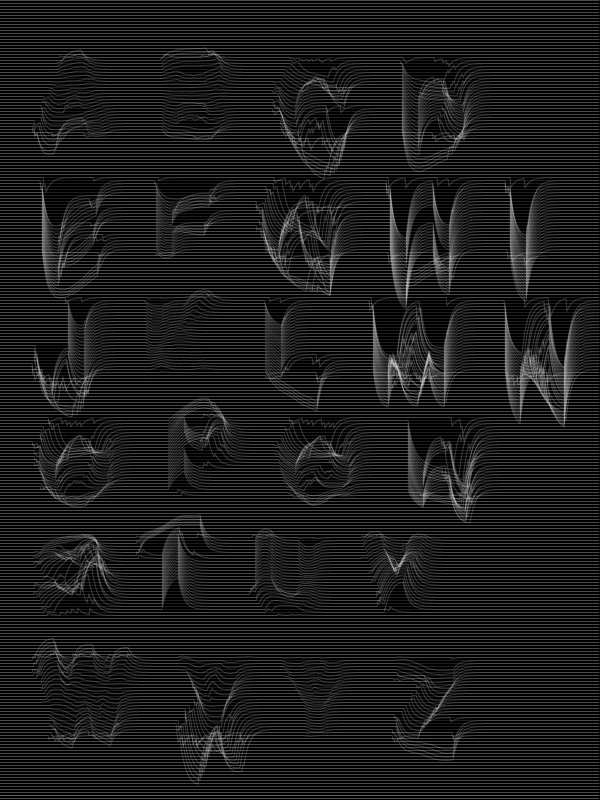 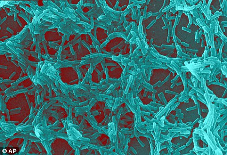 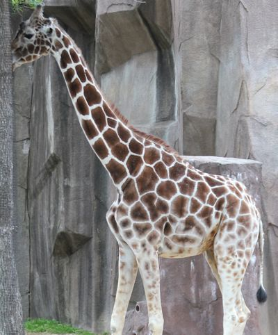 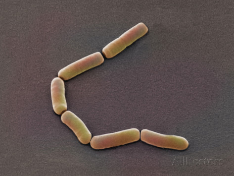 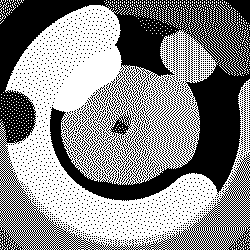 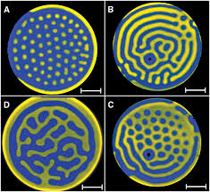 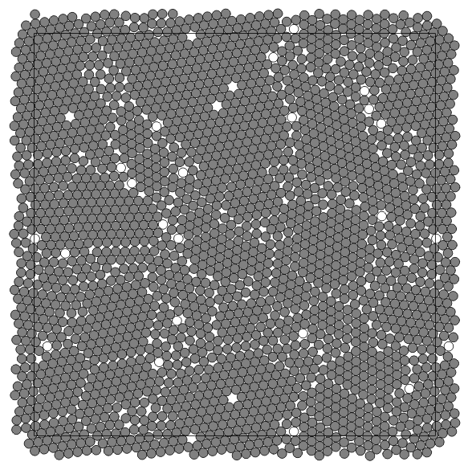 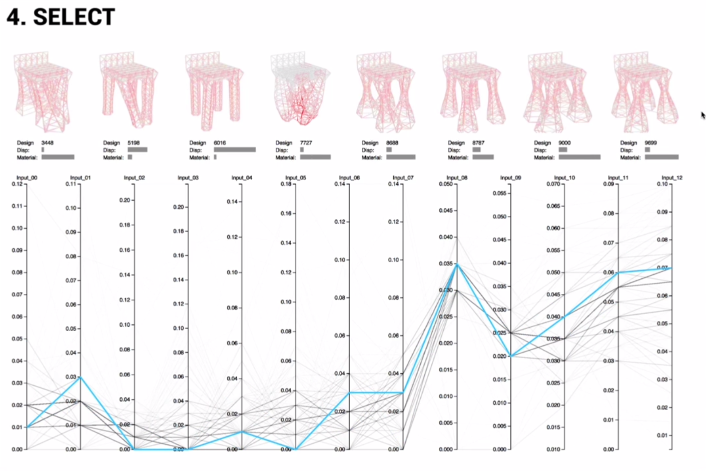
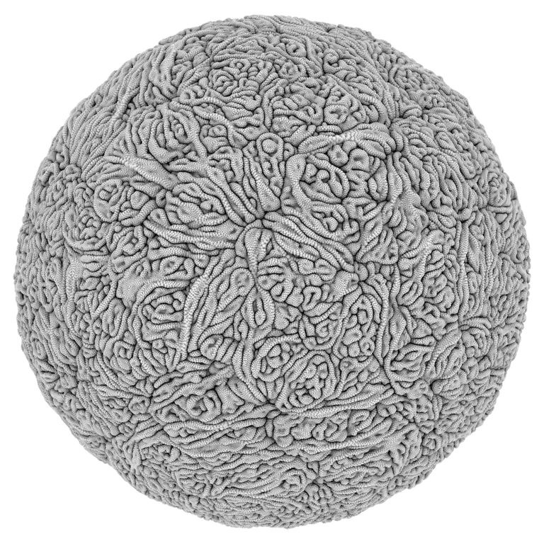
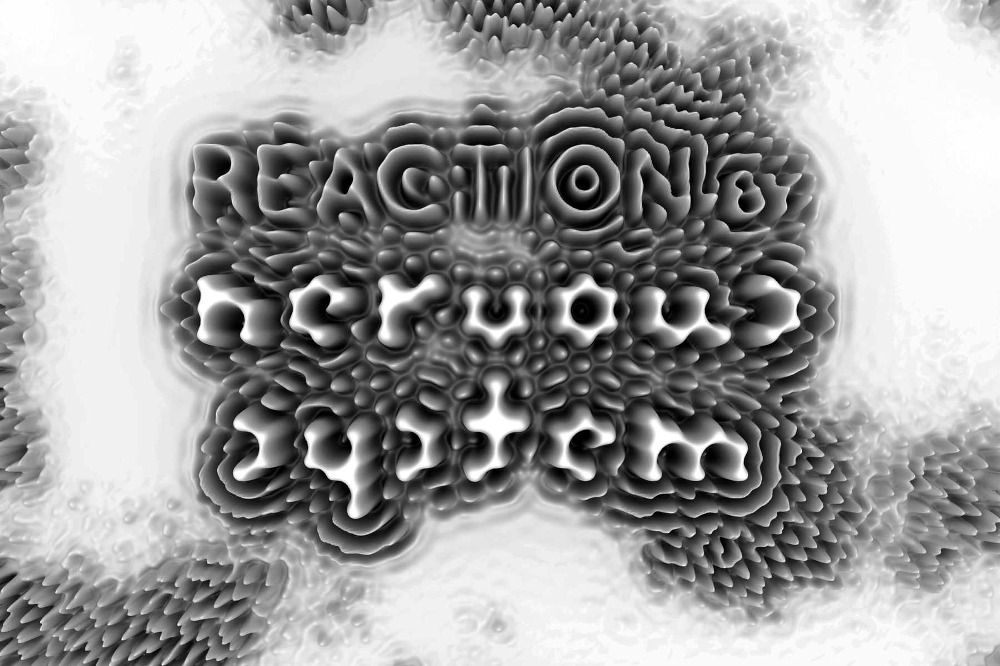
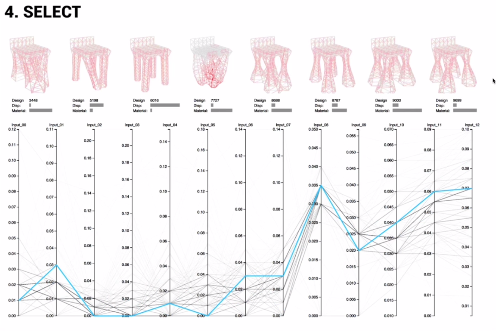
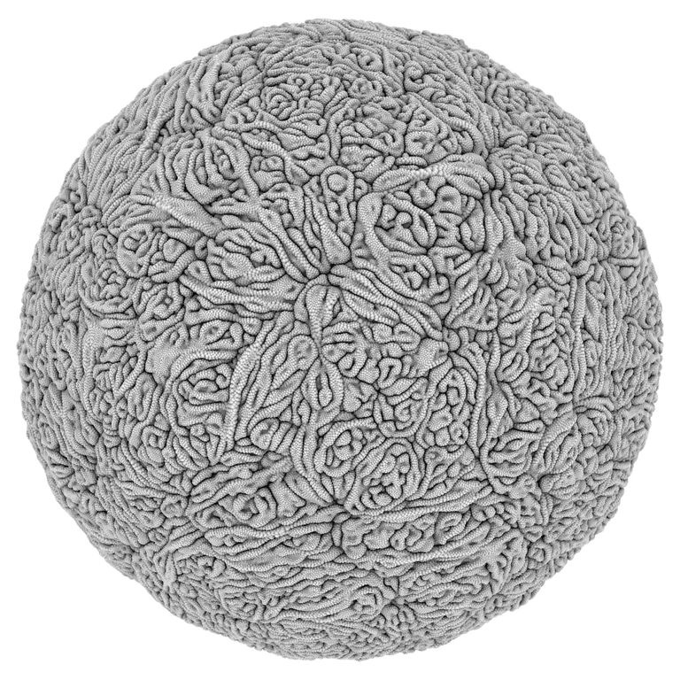
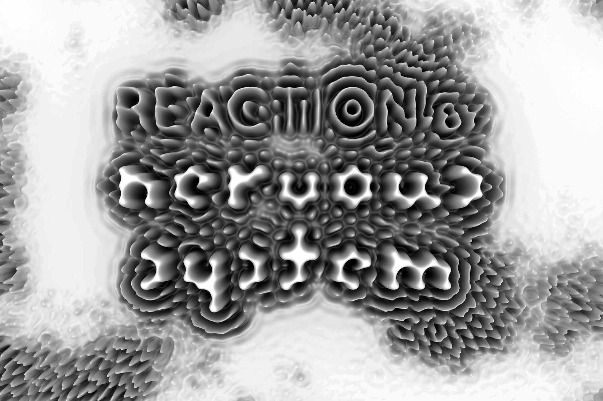
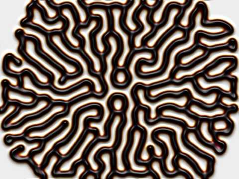 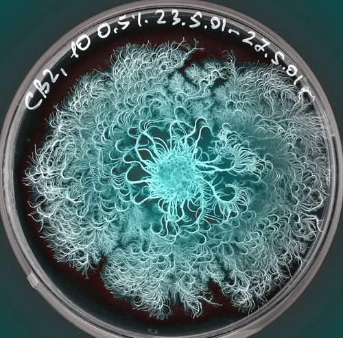 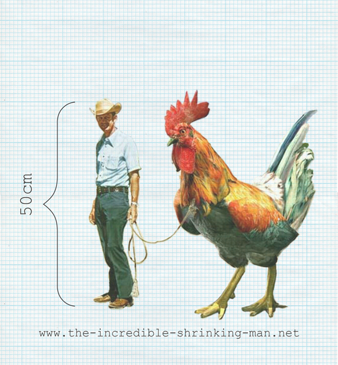 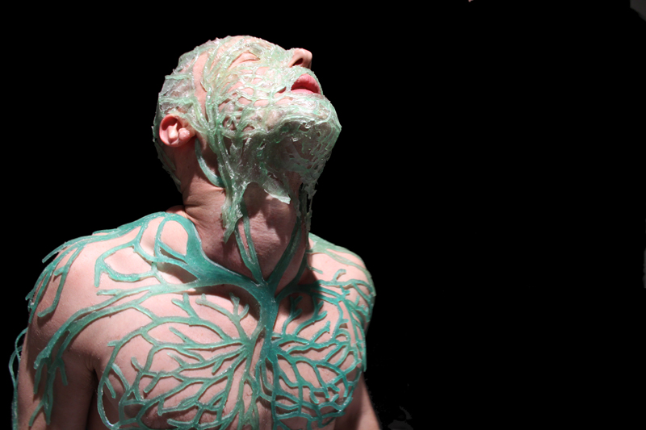 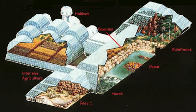 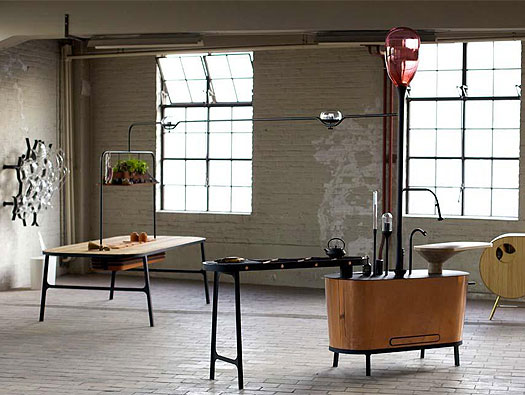
Schetsen
Pecha Kucha
die komt dan hier